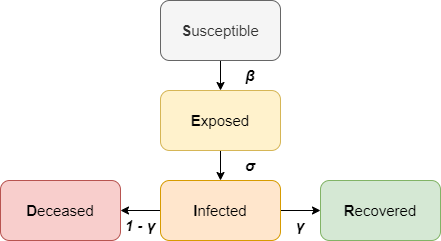
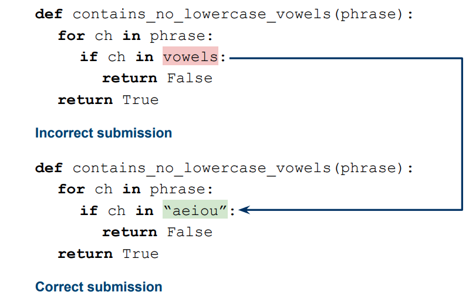

I am a MSc candidate at Queen's University as well as a Research Assistant in the Medical Informatics (Med-i) laboratory, advised by Dr. Parvin Mousavi. My main research interests are in computer vision, deep learning, and medical imaging. More specifically, my research focuses on using deep learning to detect prostate cancer in real-time during ultrasound-guided biopsy procedures. I am a recipient of the Robert Sutherland Fellowship at Queen's and the NSERC MediCREATE training award.
Education
|
MSc. in Artificial Intelligence, Queen's University
|
2022 - Present |
|
HBSc. in Computer Science & Philosophy, University of Toronto
|
2016 - 2021 |
Experience
|
Machine Learning Student Researcher, Vector Institute |
2023 - Present |
|
Graduate Research Assistant, Queen's University (with Parvin Mousavi on AI/ML for healthcare) |
2022 - Present |
|
Data Scientist, Flinks, Montréal (PyTorch, BERT, NLP) |
2021 - 2022 |
|
Research Intern, University of Toronto (with Lisa Zhang on ML and NLP) |
2021 |
|
Research Assistant, University of Toronto (with Katharina Braeutigam on bioinformatics) |
2020 - 2021 |
|
Software Engineer, Venngage, Toronto (TypeScript & React.js development) |
2019 - 2020 |
Publications & Preprints
|  |
Modelling the Spread of COVID-19 in Indoor Spaces using Probabilistic Automated Planning M. Harmanani ICAPS 2023 Scheduling and Planning Applications woRKshop (SPARK 2023) [abs] [paper] |
|  |
Using Deep Learning to Localize Errors in Student Code Submissions S. Fujimori, M. Harmanani, O. Siddiqui, and L. Zhang Proceedings of the 53rd ACM Technical Symposium on Computer Science Education (SIGCSE 2022) [abs] [paper] [slides] |
Teaching
| W2023 | Intro to Data Analytics (Queen's CISC 151), Teaching Assistant |
Honors & Awards
|
2023
Vector Institute Research Grant
Awarded to Vector researchers to support research in AI/ML
|
|
2023
NSERC MediCREATE Central Line Challenge, 2nd Place
Developed a deep learning model for (1) surgical tool detection and (2) task identification in surgical videos
|
|
2022
Robert Sutherland Fellowship
Awarded to distinguished students at Queen's belonging to a minority group
|
|
2022
NSERC MediCREATE Training Award
Awarded to students in the NSERC CREATE training program in medical informatics
|
|
2021
University of Toronto Undergraduate Research Grant
Awarded to students in good academic standing to present at a conference
|
|
2021
University of Toronto Maths & Computer Science Honour Roll
Awarded to students with a grade of 90% or greater in 3+ Math & Computer Science courses at the University of Toronto in 2020-2021
|
|
2021
Excellence 300 Award in Philosophy
Awarded to the student with the highest mark in a 300-level Philosophy class
|
|
2016
University of Toronto Entrance Award
Awarded to distinguished students admitted into the Faculty of Arts & Science
|
Skills
| Programming | Python, SQL, Java, R, TypeScript, C, C++, Haskell, Make |
| Frameworks | PyTorch, scikit-learn, Keras, NumPy, Pandas, SciPy, TensorFlow, Seaborn, React, Node.js |
| Toolbox | BigQuery, Google Dataflow, GCP, AWS (S3, SageMaker), Linux, DVC, vim, git, zsh, Jupyter |
Last updated on 2023-08-02